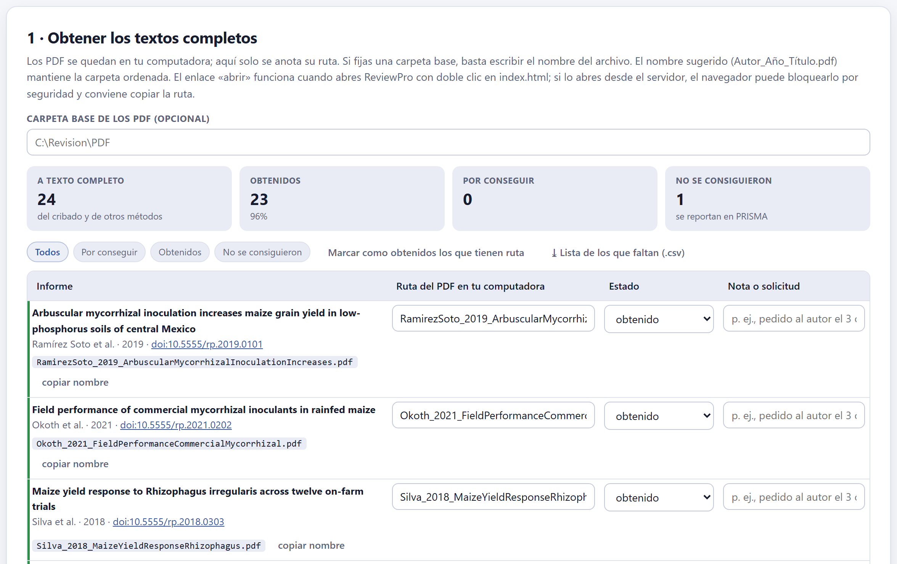
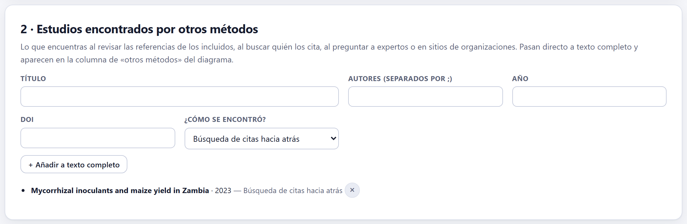
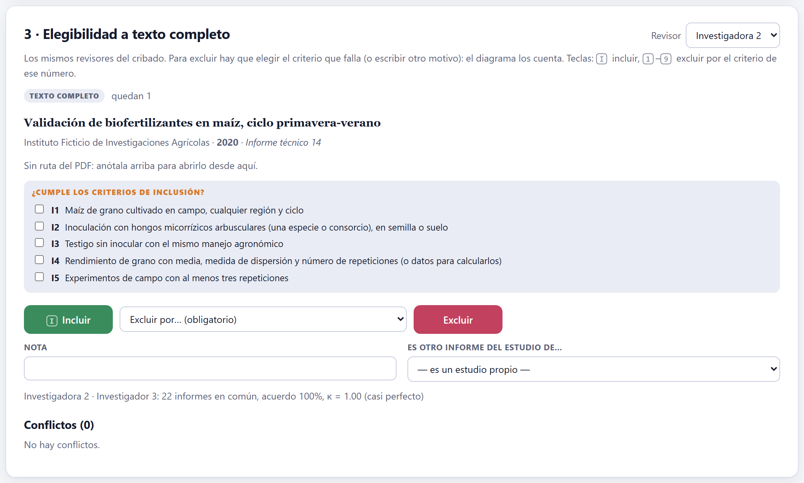
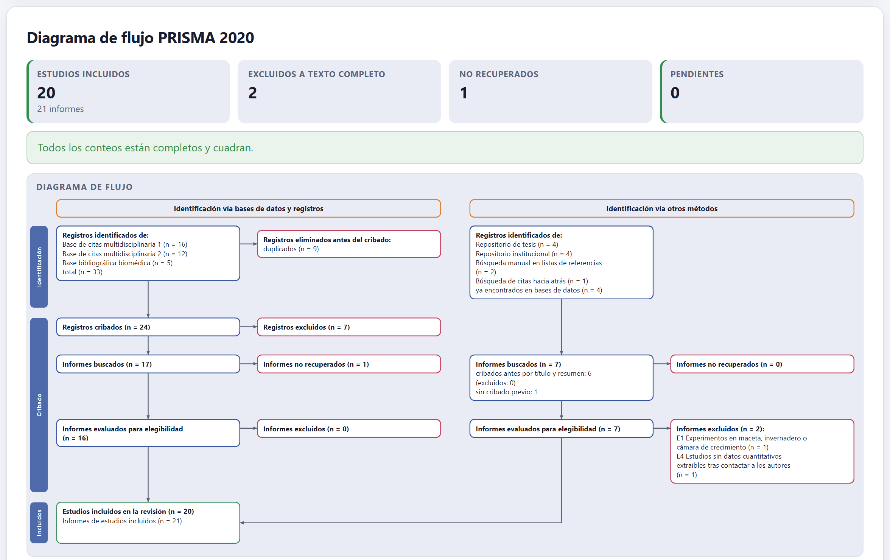

Lo que pasó el cribado se lee completo. Aquí se consigue cada informe y se anota dónde quedó su PDF, se agregan los estudios encontrados por otras vías, se decide la elegibilidad de cada informe con el motivo de cada exclusión, se juntan los informes que describen el mismo estudio, y sale el diagrama de flujo PRISMA 2020 con los conteos reales de toda la revisión.
Los PDF se quedan en tu computadora: la app no los guarda ni los lee, solo anota su ruta. Así el proyecto sigue siendo un archivo pequeño que se puede compartir, y cada PDF sigue donde tú lo organizas.

| Carpeta base de los PDF | Opcional. Si la fijas (por ejemplo, C:\Revision\PDF), en cada informe basta escribir el nombre del archivo. |
| Nombre sugerido | Autor_Año_Título.pdf, con copiar nombre: guardar cada PDF con ese nombre mantiene la carpeta ordenada y hace que las rutas se escriban solas. |
| Estado | por conseguir, obtenido o no se consiguió. Los que no se consiguieron se reportan en PRISMA como «informes no recuperados». |
| Nota o solicitud | Para seguir las gestiones: «pedido a los autores el 03/03/2027; sin respuesta». |
| Marcar como obtenidos los que tienen ruta | Cambia a obtenido todos los que ya tienen una ruta escrita. |
| ⤓ Lista de los que faltan (.csv) | Título, autores, año, revista, DOI, nombre de archivo y nota de los que faltan: la lista para la biblioteca o para escribir a los autores. |
El enlace abrir funciona cuando la app se abre con doble clic en index.html. Si la abres desde el servidor local, el navegador bloquea por seguridad los enlaces a archivos del disco; en ese caso copia la ruta y ábrela desde el explorador de archivos.

Lo que aparece al revisar las referencias de los incluidos, al buscar quién los cita, al preguntar a expertos o en sitios de organizaciones entra por aquí, con su título, autores, año, DOI y la vía: búsqueda de citas hacia atrás, hacia adelante, contacto con expertos, sitio web u organización u otra vía. Estos informes pasan directo a texto completo —no se criban por título y resumen— y el diagrama los cuenta en la columna de otros métodos, con su vía.

Los revisores son los mismos del cribado, y el menú Revisor dice quién evalúa. Para cada informe obtenido, la tarjeta muestra el enlace a su PDF y la lista de criterios de inclusión con casillas: marcarlas mientras se lee deja claro cuál falla. Luego se decide:
Debajo, el acuerdo entre revisores en texto completo (informes en común, porcentaje y kappa) y los conflictos, que se resuelven como en el cribado.
Un mismo experimento puede publicarse en una tesis y luego en un artículo, o en dos artículos que reportan variables distintas. PRISMA 2020 cuenta estudios incluidos y, aparte, sus informes. El menú Es otro informe del estudio de… liga un informe a otro ya incluido; lo normal es — es un estudio propio —. Los informes ligados forman un solo estudio en la extracción (Bloque 6), el sesgo (Bloque 7) y la síntesis (Bloque 8): así un experimento no pesa dos veces en el meta-análisis.
Contar dos veces un mismo experimento —por ejemplo, la tesis y el artículo que salió de ella— infla la precisión del efecto combinado y le da a ese experimento el doble de peso. Las pistas: los mismos autores, el mismo sitio, los mismos años y medias idénticas. Ante la duda, escribe a los autores.
De los 23 informes evaluados, se excluyeron 2 (uno de invernadero, E1, y uno sin datos extraíbles, E4) y se incluyeron 21. Dos de ellos describen el mismo experimento de campo, así que se ligaron: la revisión incluye 20 estudios en 21 informes.

El diagrama se arma solo con los conteos reales de los Bloques 3, 4 y 5 y sigue la plantilla de PRISMA 2020 con sus dos columnas: identificación vía bases de datos y registros y vía otros métodos (Page et al. 2021). En una revisión exploratoria se titula como diagrama de PRISMA-ScR. Cada caja cuenta:
| Caja | De dónde sale |
|---|---|
| Registros identificados | Los registros importados de cada fuente (Bloque 3), según el tipo de su fuente; en otros métodos, también lo agregado en la sección 5.2, con su vía. |
| Eliminados antes del cribado | Los duplicados; en la columna de otros métodos, «ya encontrados en bases de datos». |
| Registros cribados y excluidos | Las decisiones finales del Bloque 4, con los no leídos tras la regla de paro si los hay. |
| Informes buscados y no recuperados | La sección 5.1. |
| Evaluados y excluidos, con motivos | La sección 5.3, un renglón por motivo. |
| Estudios e informes incluidos | La sección 5.4. |
Arriba, cuatro cifras —estudios incluidos, excluidos a texto completo, no recuperados y pendientes— y una revisión de que todo cuadra: «Todos los conteos están completos y cuadran», o qué falta. La figura se exporta en PNG, JPG o SVG con el botón ⤓ de su esquina, y ⤓ Conteos del diagrama (.md) descarga los números en una tabla.
| Si hay pendientes | entonces el diagrama es provisional: faltan decisiones de cribado, informes por conseguir o evaluaciones por hacer, y la app dice cuántos de cada uno. |
| Si la app avisa que una vía no cuadra | entonces algún registro quedó sin decisión en un paso; revisa ese bloque. |
| Si hay exclusiones de texto completo sin motivo | entonces dales motivo: PRISMA 2020 lo pide (punto 16b). |
| Si un registro de un repositorio cae en la columna de bases de datos | entonces revisa el tipo de su fuente en el Bloque 2 o en la bitácora del Bloque 3. |
«Todavía ningún registro pasó el cribado (Bloque 4)»; «Sin ruta del PDF: anótala arriba para abrirlo desde aquí»; «Elige el motivo de exclusión»; «Evaluaste todos los informes obtenidos»; y los de la revisión del diagrama: vías que no cuadran, registros sin decisión final, informes sin conseguir ni dar por perdidos, evaluaciones pendientes o con conflicto, y exclusiones sin motivo.